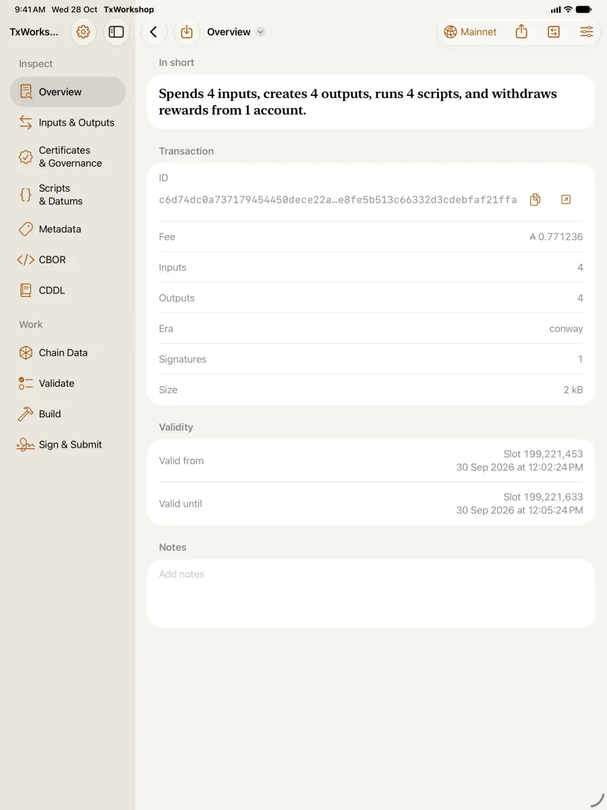
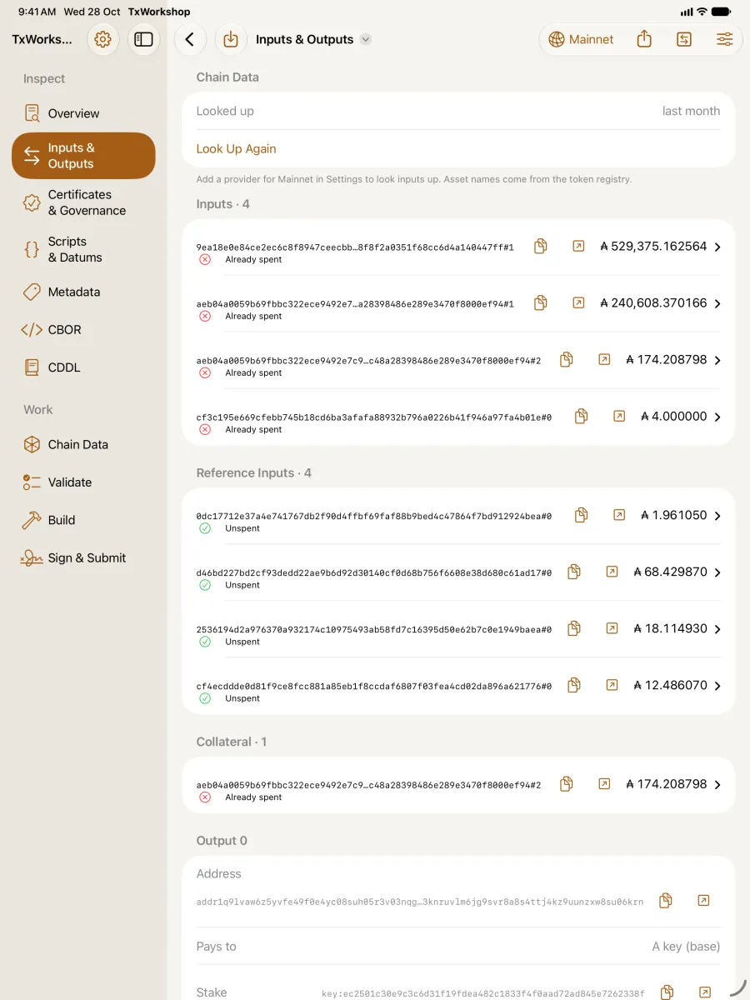
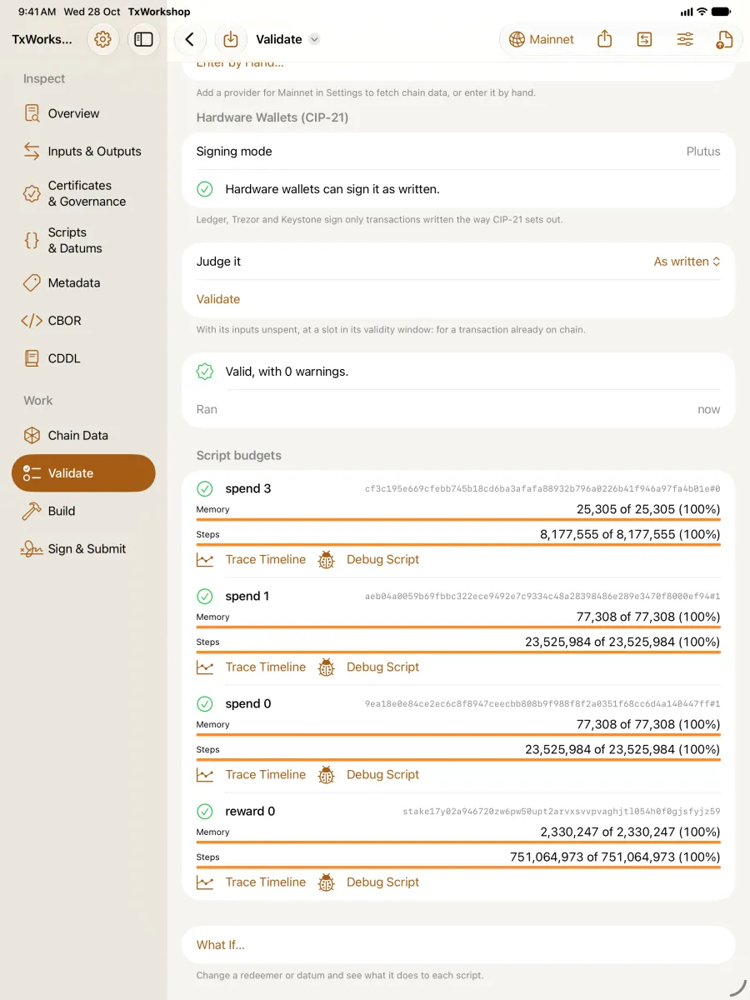
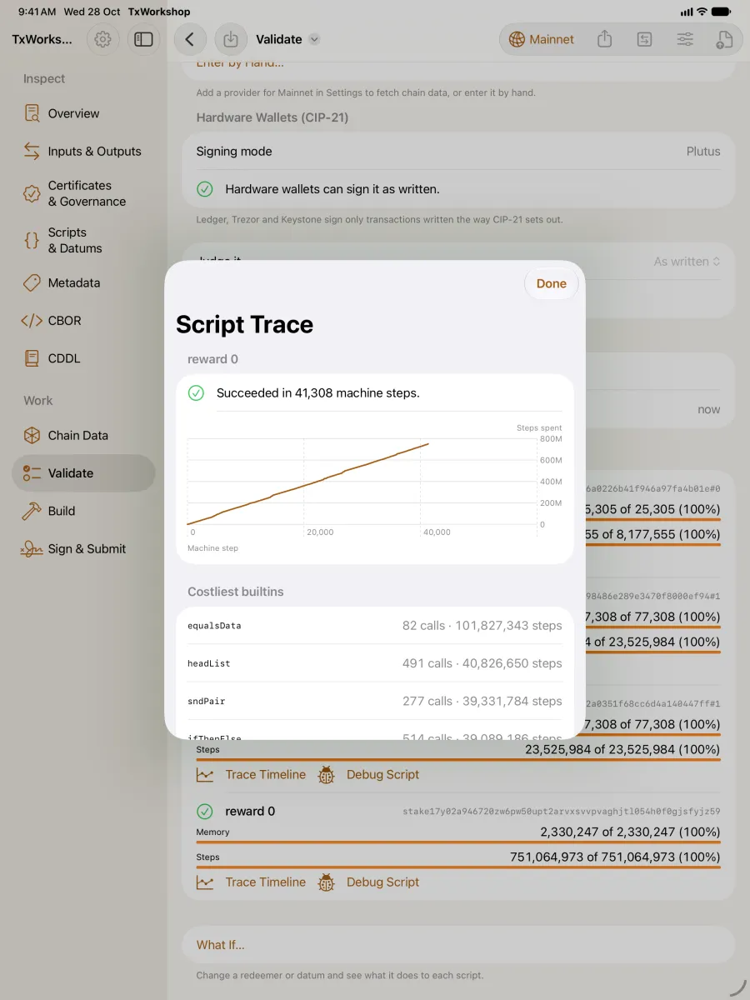
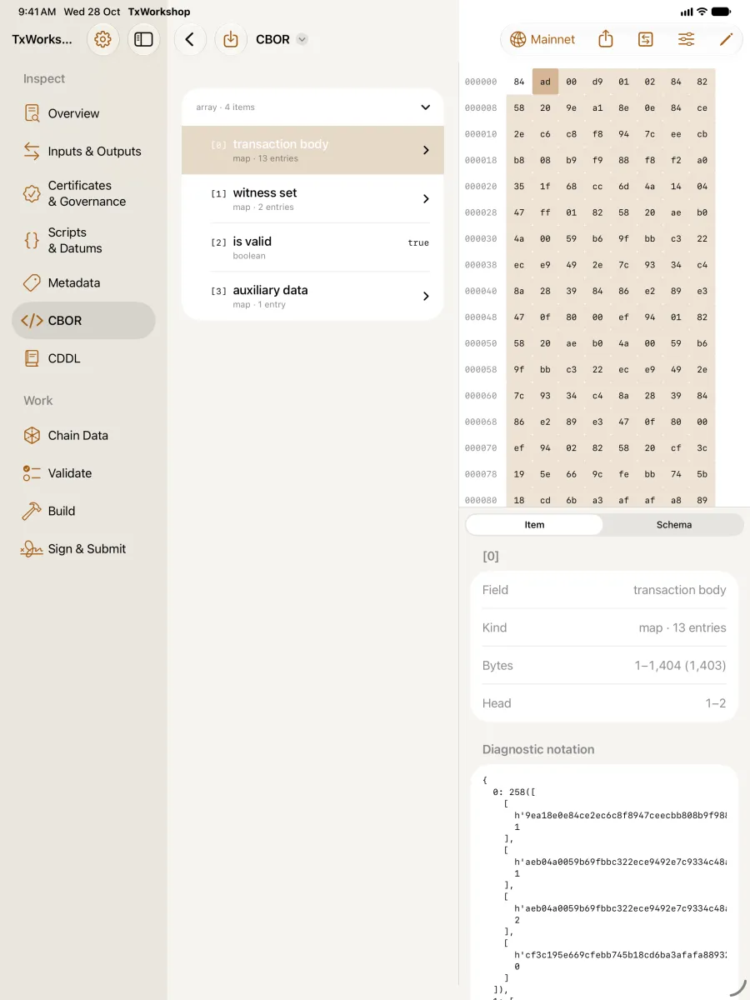
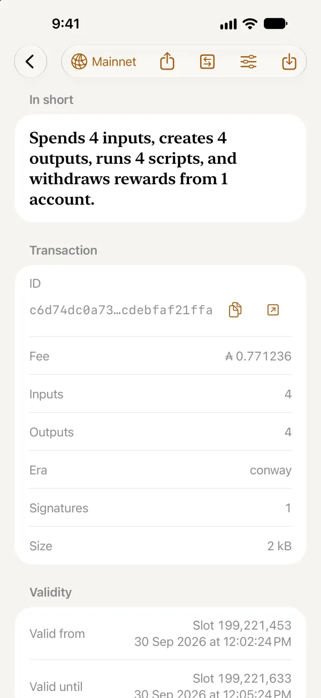
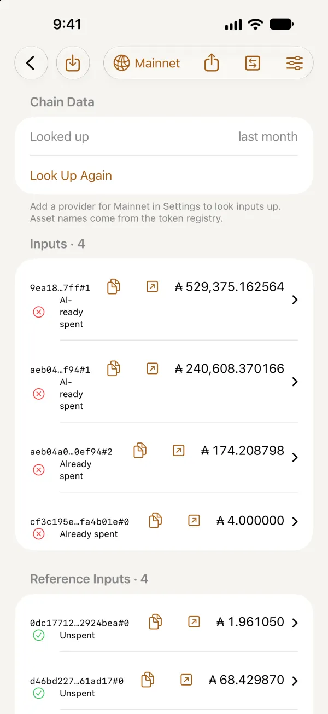
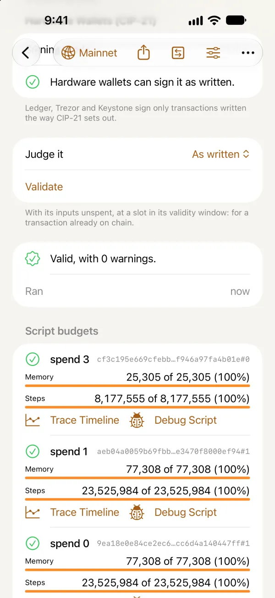
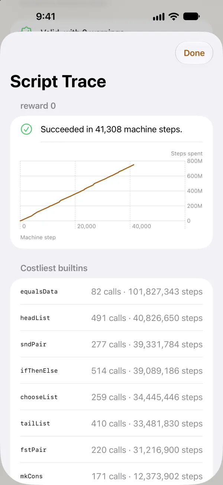
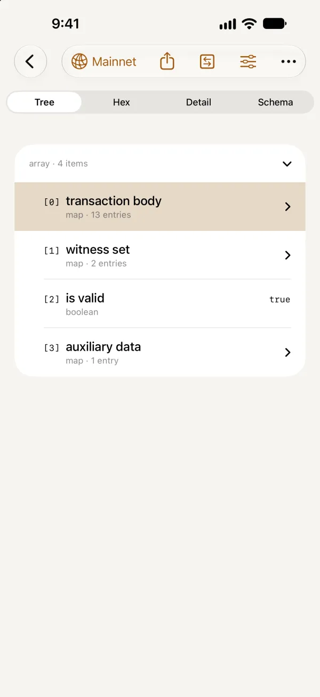

TxWorkshop
A workbench for Cardano transactions. Open one, see exactly what it does, check it against the ledger's rules, change it, sign it and send it.

Free on the App Store, for Mac, iPhone, iPad and Apple Vision Pro. The Mac download, from outside the App Store, adds a local cardano-node and cardano-cli, which the App Store doesn't allow. It needs macOS 27, and keeps itself up to date. Or install it with Homebrew:
brew install --cask kingpin-apps/tap/cardano-txworkshopOn every device























What it does
Inspect
Inputs, outputs, assets, mints, every certificate field, votes, proposals, scripts and metadata, laid out plainly, with token names and links to your block explorer.
CBOR and CDDL
Every item tied to its bytes, each field named, non-canonical encoding flagged, and any item checked against the ledger's schema for its era.
Validate
The ledger's Phase 1 rules and Plutus script evaluation, offline, with budgets per redeemer, a script trace, what-if runs, and a check that hardware wallets can sign it (CIP-21).
Build
Outputs, mints, script inputs, every Conway certificate, withdrawals, votes and proposals, from the UTxOs you choose. Addresses, pools and keys in any form, typed or from files; datums and redeemers as typed forms from a blueprint.
Debug scripts
Step through a Plutus script's run, forwards and back, with its variables, stack, budget and traces, breakpoints, and a redeemer to try instead.
Chain data
The tip, epoch, era and protocol parameters, and the UTxOs a transaction spends, fetched once and kept in the document for offline work.
Sign
Keys from a recovery phrase, kept in the Keychain behind Face ID or Touch ID, or a Ledger, Trezor or Keystone hardware wallet.
Submit
Through Blockfrost, Koios, Ogmios, Yaci DevKit, or, on the Mac download, your own cardano-node or cardano-cli. Then track confirmation.
Yours, on your device
No account and no analytics. Documents stay where you save them; API keys and signing keys stay in the Keychain and are never written to a document. Turn on Sync with iCloud to share providers and API keys between your devices, through iCloud Keychain; signing keys never leave the device. See the privacy policy.